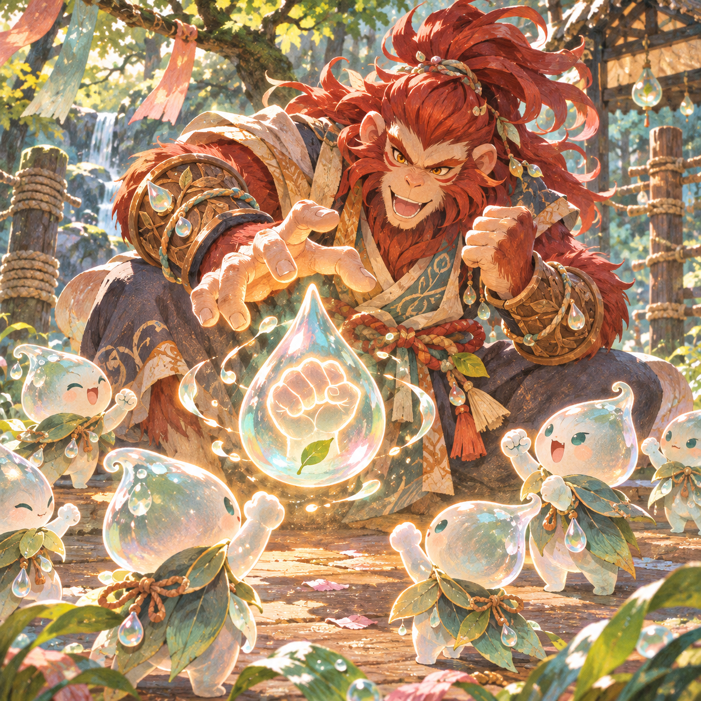
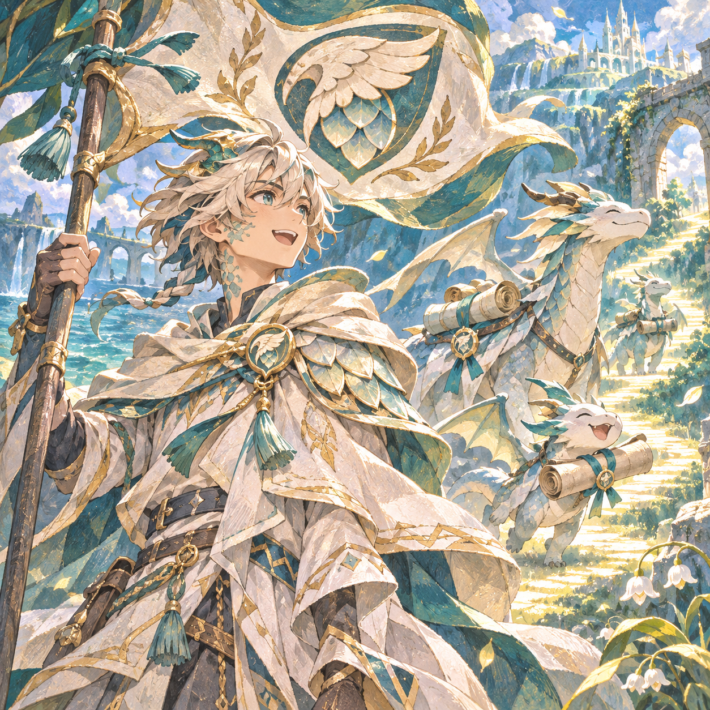
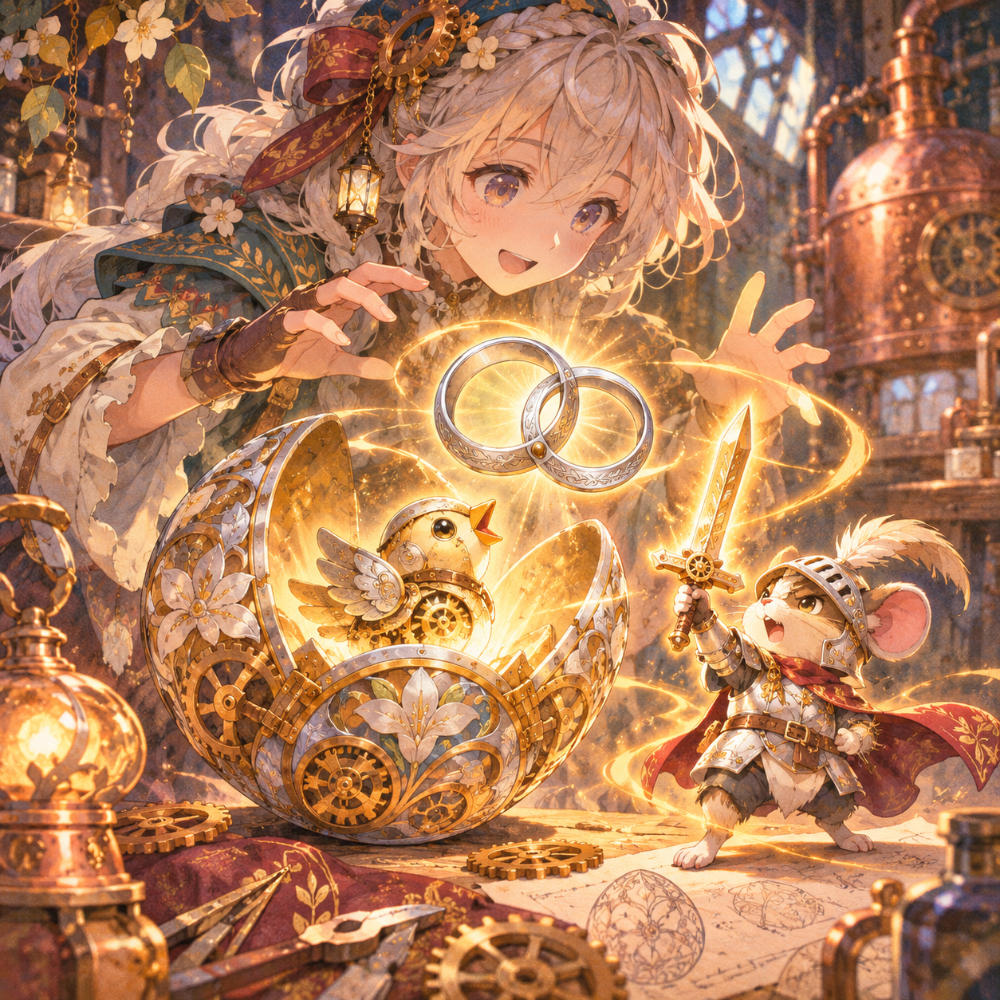
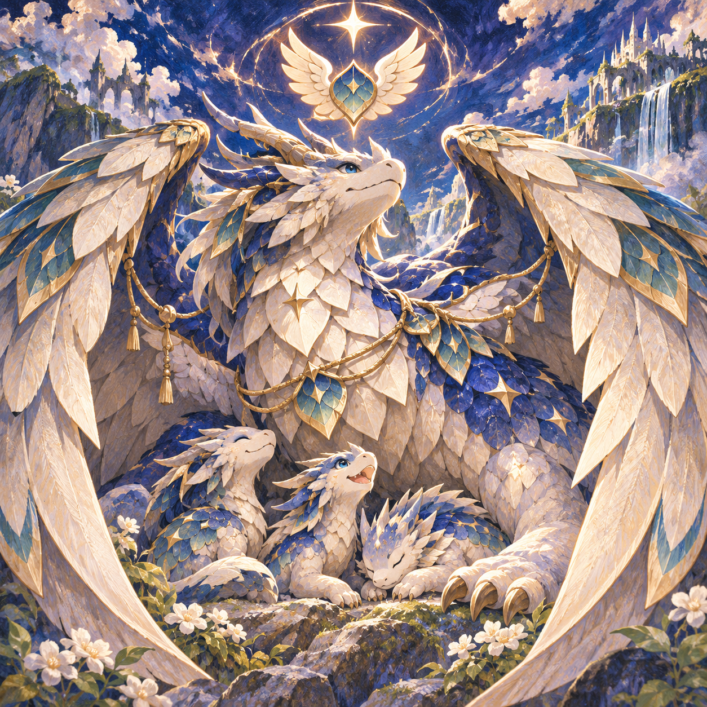
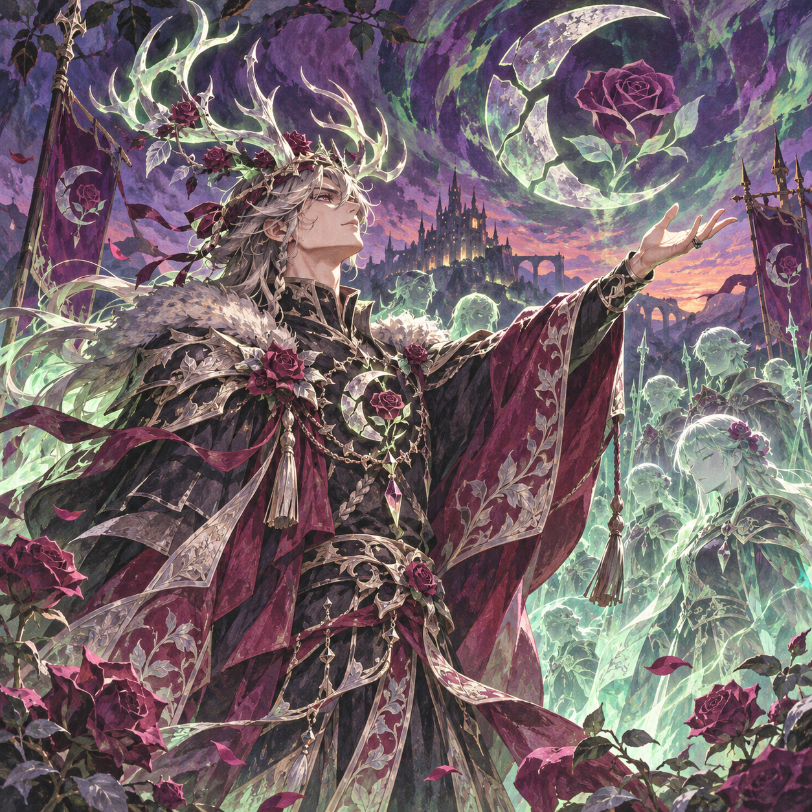

PROJECT FAIRYTALE RIVALS / 第4弾 制作準備刻印に集う、おとぎの一族
名前案114件／先行原画9枚。名前・一族名・絵は制作案です。残り105件の絵は未制作で、ゲーム本体の第4弾はまだ未実装です。
通常カード100種の対応IDと性能情報は維持。10種族とは別に、仲間を結ぶ衣装や紋様を提案しています。原画を押すと大きく表示できます。
FT-0577 · 夜継ぎの一族夜継ぎの錆祓い
原作対応・効果の観測情報
シャーマン
パワフルバッジ：ゾンビ系のユニットカードを使う度敵リーダーの武器の攻撃力-1
画像・版・裁定の確認は未完了です。
露珠を継ぐ花告鳥
原作対応・効果の観測情報
はなカワセミ
パワフルバッジ：スライム系のユニットカードを使う度味方リーダーのHPを1回復
画像・版・裁定の確認は未完了です。
夜継ぎの繕い番
原作対応・効果の観測情報
ガスト
パワフルバッジ：ゾンビ系の味方ユニットのHP+1
画像・版・裁定の確認は未完了です。
露珠の宵衣司祭
原作対応・効果の観測情報
闇の司祭
パワフルバッジ：スライム系の味方ユニットは特技ダメージを受けない
画像・版・裁定の確認は未完了です。

FT-0630 · 露珠の一族露珠の拳継ぎ
原作対応・効果の観測情報
キラーエイプ
パワフルバッジ：スライム系の味方ユニットの攻撃力+1
画像・版・裁定の確認は未完了です。

FT-0640 · 竜鱗の一族竜鱗の若き旗騎士
原作対応・効果の観測情報
たつのこナイト
パワフルバッジ：自分の手札にあるドラゴン系のユニットカードのコスト-1。
画像・版・裁定の確認は未完了です。

FT-0647 · 銀環の一族銀環の刻印卵
原作対応・効果の観測情報
からくりエッグ
パワフルバッジ：メタルボディもしくはハードメタルボディを持つ味方ユニットと武器の攻撃力+1
画像・版・裁定の確認は未完了です。

FT-0659 · 竜鱗の一族竜鱗の盾翼獣
原作対応・効果の観測情報
バルンバ
パワフルバッジ：ドラゴン系の味方ユニットはにおうだちを得る
画像・版・裁定の確認は未完了です。

FT-0674 · 夜継ぎの一族夜継ぎの黒薔薇帝
原作対応・効果の観測情報
暗黒皇帝ガナサダイ
パワフルバッジ：自分のターン終了時ゾンビ系の味方ユニットを+1/+1
画像・版・裁定の確認は未完了です。
全114件の名前案を見る
| ID | 原作対応 | 名前案 | 画像 |
|---|
| FT-0575 | ミノーン | 繭灯の守り子 | 未制作 |
| FT-0576 | スライムファング | 露牙の小獣 | 未制作 |
| FT-0577 | シャーマン | 夜継ぎの錆祓い | 原画案あり |
| FT-0578 | マヒャドフライ | 霜便りの羽虫 | 未制作 |
| FT-0579 | ドロル | 墓土の縫い子 | 未制作 |
| FT-0580 | はなカワセミ | 露珠を継ぐ花告鳥 | 原画案あり |
| FT-0581 | まものつかい | 刻印探しの獣案内 | 未制作 |
| FT-0582 | どくどくゾンビ | 夜継ぎの毒縫い師 | 未制作 |
| FT-0583 | ホミロン軍曹 | 露珠隊の星撃曹長 | 未制作 |
| FT-0584 | エビルマスター | 三族を訪ねる招き手 | 未制作 |
| FT-0585 | パペットマン | 糸喰いの木偶 | 未制作 |
| FT-0586 | ブラッドレディ | 紅露の針姫 | 未制作 |
| FT-0587 | どくろ大臣 | 夜継ぎの帰路大臣 | 未制作 |
| FT-0588 | マーマンダイン | 竜鱗の潮鳴り師 | 未制作 |
| FT-0589 | もりもりスライム | 露珠のふくらみ樹 | 未制作 |
| FT-0590 | 妖魔軍王ブギー | 硝子檻の仮面公 | 未制作 |
| FT-0591 | ベビーゴイル | 小翼の書庫番 | 未制作 |
| FT-0592 | ぶっちズキーニャ | 舞台を渡る蔓槍兵 | 未制作 |
| FT-0593 | コドラ | 竜鱗の道開き | 未制作 |
| FT-0594 | カーディナルナイト | 刻印断ちの白槍騎士 | 未制作 |
| FT-0595 | ハッスルじじい | 星路の踊り翁 | 未制作 |
| FT-0596 | オルゴ・デミーラ | 四幕の原初竜アウル | 未制作 |
| FT-0597 | エステラ | 竜詩を継ぐ少女セレナ | 未制作 |
| FT-0598 | スライムダーク | 宵露の刃精 | 未制作 |
| FT-0599 | ヘルシーサー | 舞台守りの双尾獅子 | 未制作 |
| FT-0600 | マザーウッド | 共鳴の母樹 | 未制作 |
| FT-0601 | 屍騎軍王ゾルデ | 夜継ぎの影冠将 | 未制作 |
| FT-0602 | ジャックポッター | 星札の両替師 | 未制作 |
| FT-0603 | ブラックドラゴン | 竜鱗の黒嵐 | 未制作 |
| FT-0604 | レジェンドウルフ | 星鱗の遠吠え竜 | 未制作 |
| FT-0605 | 排水の構え | 不退の剣誓 | 未制作 |
| FT-0606 | ことだまつかい | 夜継ぎの双鐘語り | 未制作 |
| FT-0607 | ガスト | 夜継ぎの繕い番 | 原画案あり |
| FT-0608 | 剣豪の闘志 | 覚めゆく剣豪の熱 | 未制作 |
| FT-0609 | 剣の錬成 | 折れ刃を継ぐ炉 | 未制作 |
| FT-0610 | ゾンビマスター | 夜継ぎの返り糸師 | 未制作 |
| FT-0611 | ヘルオーディン | 夜継ぎの貫槍守 | 未制作 |
| FT-0612 | 大怨霊マアモン | 夜継ぎの弔火巨人 | 未制作 |
| FT-0613 | 黒騎士レオコーン | 夜継ぎの疾駆黒騎士 | 未制作 |
| FT-0614 | じごくのサーベル | 弔い火の継承剣 | 未制作 |
| FT-0615 | まほうの小ビン | めぐり巡る小瓶 | 未制作 |
| FT-0616 | だんごスライム | 露珠の三つ編み精 | 未制作 |
| FT-0617 | ルカナン | ほどける護りの糸 | 未制作 |
| FT-0618 | てつのさそり | 露珠の甲織り蠍 | 未制作 |
| FT-0619 | 闇の司祭 | 露珠の宵衣司祭 | 原画案あり |
| FT-0620 | 魔力の奔流 | 覚めゆく魔力の川 | 未制作 |
| FT-0621 | まどうスライム | 露珠の星綴り術師 | 未制作 |
| FT-0622 | スライム呼び | 露珠の縦糸召喚 | 未制作 |
| FT-0623 | ダークキング | 露珠の黒晶王 | 未制作 |
| FT-0624 | スライムの心 | ひと雫への帰還 | 未制作 |
| FT-0625 | スライムフィーバー | 露珠の祭り替え | 未制作 |
| FT-0626 | はねスライム | 露珠の双翼跳び | 未制作 |
| FT-0627 | スライムホイッスル | 露珠招きの草笛 | 未制作 |
| FT-0628 | せいけん爆撃 | 紅拳の破城打 | 未制作 |
| FT-0629 | いしのツメ | 露珠響きの石爪 | 未制作 |
| FT-0630 | キラーエイプ | 露珠の拳継ぎ | 原画案あり |
| FT-0631 | エンゼルスライム | 露珠の雲梯使い | 未制作 |
| FT-0632 | 必中拳 | 露珠合わせの必中掌 | 未制作 |
| FT-0633 | ドンガラドン | 露珠の鼓動太鼓 | 未制作 |
| FT-0634 | グランスライム | 露珠の大族長 | 未制作 |
| FT-0635 | リンリン | 竜呼びの鈴守り | 未制作 |
| FT-0636 | スクルト | 縦糸の守護祈り | 未制作 |
| FT-0637 | 竜のうろこ | 竜鱗を継ぐ祝福 | 未制作 |
| FT-0638 | ダックスビル | 竜鱗の繕い獣 | 未制作 |
| FT-0639 | しっぷうのレイピア | 竜便りの風細剣 | 未制作 |
| FT-0640 | たつのこナイト | 竜鱗の若き旗騎士 | 原画案あり |
| FT-0641 | グレイナル | 竜鱗の黎明賢竜 | 未制作 |
| FT-0642 | 冷たい笑み | 静謐なる鏡の微笑 | 未制作 |
| FT-0643 | 精霊の矢 | 返り光の精霊矢 | 未制作 |
| FT-0644 | ドラゴンバゲージ | 竜鱗の荷守り竜 | 未制作 |
| FT-0645 | メタルの巻物 | 銀環の招き巻物 | 未制作 |
| FT-0646 | メタルのそろばん | 銀環の数珠算盤 | 未制作 |
| FT-0647 | からくりエッグ | 銀環の刻印卵 | 原画案あり |
| FT-0648 | メタルブラザーズ | 銀露の三つ子 | 未制作 |
| FT-0649 | てっこうまじん | 銀環の鎧仕立て巨人 | 未制作 |
| FT-0650 | 覚醒の巻物 | 覚めゆく守護の巻物 | 未制作 |
| FT-0651 | 痛みわけの杖 | 痛みを分かつ双枝杖 | 未制作 |
| FT-0652 | デュランダル | 銀環の歯車公 | 未制作 |
| FT-0653 | スペクタクルショー | 銀環の大変身舞台 | 未制作 |
| FT-0654 | ダイヤモンドスライム | 銀露の金剛冠 | 未制作 |
| FT-0655 | いっかく竜 | 竜鱗の星角案内竜 | 未制作 |
| FT-0656 | 魂の写し身 | 魂を写す双鏡 | 未制作 |
| FT-0657 | 竜の逆鱗 | 竜鱗の逆巻く雷 | 未制作 |
| FT-0658 | 力のタロット | 力を分ける星札 | 未制作 |
| FT-0659 | バルンバ | 竜鱗の盾翼獣 | 原画案あり |
| FT-0660 | 竜の胎動 | 竜卵の星呼吸 | 未制作 |
| FT-0661 | ソルジャーブル | 竜鱗の角旗兵 | 未制作 |
| FT-0662 | キースドラゴン | 竜鱗の双相氷竜 | 未制作 |
| FT-0663 | だいまどう | 竜詩の大占術師 | 未制作 |
| FT-0664 | しんりゅう | 四願の天書竜 | 未制作 |
| FT-0665 | 悪鬼丸 | 夜継ぎの目覚め角 | 未制作 |
| FT-0666 | 死への誘い | 小さき命への終鐘 | 未制作 |
| FT-0667 | 冥府の門 | 夜継ぎの二重門 | 未制作 |
| FT-0668 | 猛毒の霧 | 夜園を満たす毒霧 | 未制作 |
| FT-0669 | デビルウィザード | 夜継ぎの紅杖魔術師 | 未制作 |
| FT-0670 | 死者の魂 | 死者が灯す魔泉 | 未制作 |
| FT-0671 | 亡者の執念 | 夜継ぎの帰還誓約 | 未制作 |
| FT-0672 | バラモスブロス | 夜継ぎの還魔公 | 未制作 |
| FT-0673 | アスラ王 | 夜継ぎの大召還王 | 未制作 |
| FT-0674 | 暗黒皇帝ガナサダイ | 夜継ぎの黒薔薇帝 | 原画案あり |
| token-set4-withered-bookmark | うまのふん | 萎れた旅の栞 | 未制作 |
| token-set4-secret-grimoire | エッチな本 | 秘めごとの禁書 | 未制作 |
| token-set4-shadow-knight | 屍騎軍王ゾルデ・影 | 夜継ぎの影騎士 | 未制作 |
| token-set4-aul-act-two | オルゴ・デミーラ：第２形態 | アウル・第二幕 | 未制作 |
| token-set4-aul-act-three | オルゴ・デミーラ：第３形態 | アウル・第三幕 | 未制作 |
| token-set4-aul-act-four | オルゴ・デミーラ：第４形態 | アウル・第四幕 | 未制作 |
| token-set4-serena-dragon | エステラ：竜化の術 | セレナ・竜詩の姿 | 未制作 |
| token-set4-dusk-crystal | 闇のクリスタル | 宵露の守晶 | 未制作 |
| token-set4-dawn-regalia | 竜戦士の装具 | 黎明竜の守護装具 | 未制作 |
| token-set4-wish-pages | てふだを ふやしたい | 願い：叡智の泉 | 未制作 |
| token-set4-wish-summon | ドラゴンを だしやすく したい | 願い：竜の招き | 未制作 |
| token-set4-wish-strength | ドランゴを つよくしたい | 願い：竜の祝福 | 未制作 |
| token-set4-wish-grimoire | エッチな ほんが よみたい | 願い：秘めごとの頁 | 未制作 |
| token-set4-returning-revenant | アンデッドマン | 夜継ぎの小従者 | 未制作 |
画像生成：組み込みImageGen。カードごとの完全な生成プロンプトは 制作JSON に保存。